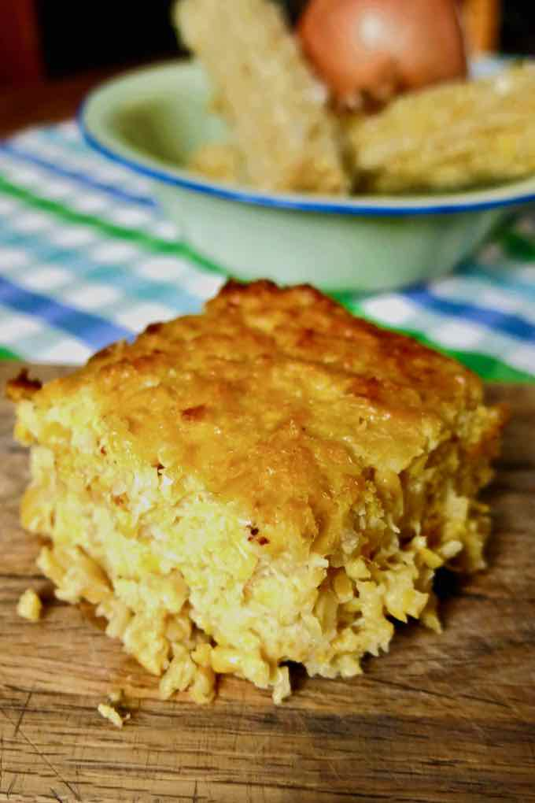

Chipa Guazú

Summary
Chipa guazú is one of the many varieties of chipa (bread or cake) consumed by Paraguayans. It is prepared with fresh corn kernels, cheese, eggs, oil and milk.
History
The cuisine of Paraguay is considered by some to be very comforting cuisine. It is indeed high in calorie, probably a consequence of the war of the Triple Alliance (1864-1870) against Brazil, Uruguay and Argentina, which left the country devastated and affected by famine. The result is a rich, simple and familiar cuisine, providing a feeling of satiety. Chipa guazú is made from fresh corn kernels, cheese, eggs, oil and milk. No yeast or baking soda are used.
Description
- Preparation time: 25 mins
- Cook time: 45 mins
- Total time: 1 hr 10 mins
Ingredients
- 8 ears of corn
- 4 eggs
- ½ cup milk
- ½ cup sunflower oil
- 2 small onions
- 10 oz Paraguayan cheese
- ½ teaspoon salt
- Pepper
Equipment
Instructions
- Preheat the oven to 400 °F / 200 °C
- Blend the corn until it reaches the consistency of oatmeal.
- Heat 3 tablespoons of oil in a frying pan and fry the onions for 5 minutes or until they become translucent.
- In the bowl of a stand mixer with the beater attachment, combine the eggs, milk, cheese, onions, salt and pepper (to taste) to obtain a smooth and slightly foamy consistency.
- Add the blended corn and remaining oil and mix well.
- Grease an 8-inch (20 cm) square pan and pour the mixture.
- Bake and cook for about 30 to 40 minutes or until golden brown.
Navigation: